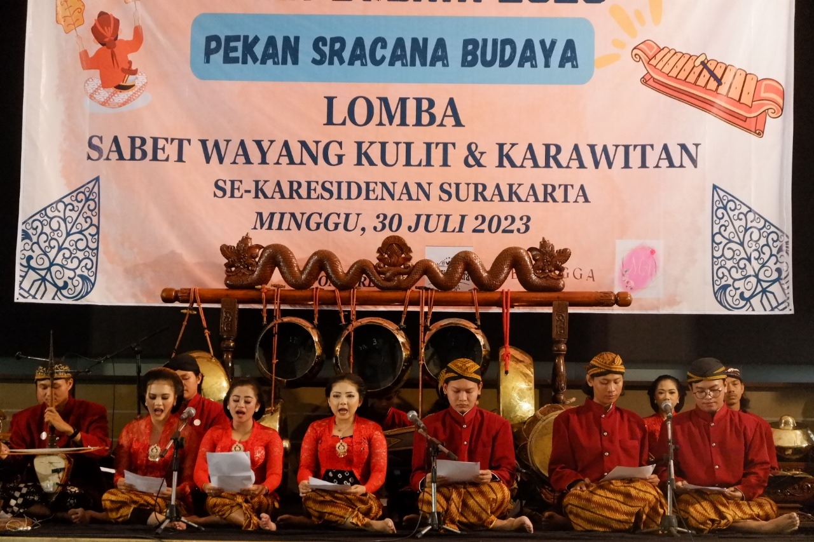

"Prestasi Memukau dari UKM Kesenian Tradisional Universitas Luar Biasa"

Universitas Luar Biasa memperoleh prestasi luar biasa melalui keberhasilan salah satu Unit Kegiatan Mahasiswa (UKM) Kesenian Tradisionalnya. Dalam sebuah kompetisi nasional yang diikuti oleh berbagai perguruan tinggi, UKM tersebut meraih gelar juara pertama dengan penampilan yang memukau.
Penampilan dari anggota UKM Kesenian Tradisional ini tidak hanya mempersembahkan keindahan seni tradisional, tetapi juga menggambarkan dedikasi, kerja keras, dan semangat berkolaborasi. Melalui tarian, musik, dan teater tradisional, mereka berhasil menyampaikan cerita budaya dengan cara yang menarik dan menghibur.
Keberhasilan ini bukan hanya prestasi bagi anggota UKM, tetapi juga mencerminkan dukungan kuat dari universitas terhadap pelestarian dan pengembangan seni tradisional. Prestasi ini diharapkan dapat menjadi inspirasi bagi mahasiswa lainnya untuk bergabung dengan UKM kesenian tradisional dan menjaga keberlanjutan budaya lewat seni.
Dengan prestasi gemilang ini, UKM Kesenian Tradisional Universitas Luar Biasa membuktikan bahwa seni tradisional tidak hanya hidup di masa lalu, tetapi juga menjadi kekuatan yang hidup dan berkembang di lingkungan perguruan tinggi. Dengan keberagaman seni tradisional yang dimiliki, mereka memberikan kontribusi positif terhadap nilai-nilai budaya di tingkat lokal dan nasional.